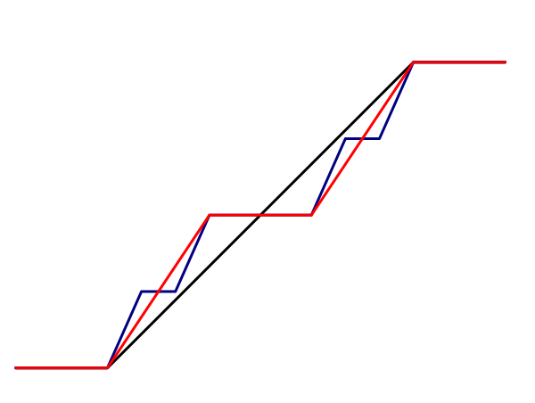
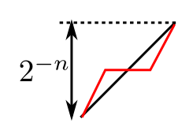

We hae talked about many different types of distributions. Here is a Venn diagram for the different types.
As this diagram shows, there are distributions that are neither discrete nor continuous (green dot in the diagram). Also
there are continuous distributions
that do not admit a density (blue dot). We shall now take a closer look at two such examples.
Such distributions abound in reality. Here is a simple example. Imagine a random light bulb with
light span $X.$ This means if you turn it on, and never switch it off, and monitor it
continuously to record the time when it gets fused, then that time is $X.$ Now, lifespans need to be found for lamps
for quality control purposes. But it is not feasible to wait all the way until the toughest bulb burns itself out. Instead,
the monotoring is done only up to a fixed time $t$, say. If the true life span is $X,$ then we record $Y$
where
$$Y = \left\{\begin{array}{ll}X&\text{if }X\leq t\\ t&\text{otherwise.}\end{array}\right.$$
We say that $Y$ is a obtained by truncating $X$ at $t.$
If $X$ has a CDF like this:
then $Y$ has a CDF like this:
Though, strictly speaking it is neither continuous nor discrete, yet, colloqually, we often say
that here we have both density and mass. The density is up to $t,$ and the mass is at $t.$
Video for this section
The example we are going to describe is called Cantor distribution. As it has neither a PMF nor a density, we
shall describe it using its CDF. But its CDF is not easy to write down directly. Instead, we shall construct a sequence
of CDFs $(F_n)$ and express the Cantor CDF as their limit.
Consider the interval $S_0 = [0,1].$ If you remove its middle open one-third, then you will be
left with $S_1 = \left[0,\frac 13 \right]\cup\left[ \frac 23,1 \right].$
If you apply the same thing to each of the intervals in $S_1$ you will be left with
$$S_2 = \left[ \frac 09,\frac 19 \right]\cup\left[ \frac 29, \frac 39 \right]\cup\left[ \frac 69, \frac 79 \right]\cup\left[ \frac 89, \frac 99 \right].$$
This recursive process is perhaps better understood diagrammatically:
Now we shall define $F_n$ as the CDF of the uniform distribution over $S_n$ for $n=0,1,2,...$
Here the graphs of $F_0, F_1$ and $F_2$:
Note that each oblique part in $F_n$ has ertical height $2^{-n}.$
It is possible to write down an algebraic formula for $F_n.$ But it is preferable to think
in terms of graphs to appreciate
the following discussion.
We are going to claim that $F_n$'s converge. Indeed, they converge uniformly. This should be readily apparent if we
overlay their graphs.

To move from one $F_n$ to the next we are leaving horizontal parts unchanged and replacing each oblique segment like
this:

Replace the black with the red
Thus, the change from $F_n$ to any $F_m$ for $m>n$ is at most $2^{-n}.$
Digest this well from the graphs, as this will form the main argument in the proof coming up in the next video.
Here we shall formally prove the uniform convergence of $(F_n).$ We shall employ the uniform Cauchy
criterion, i.e., we shall show that
Target
$\forall \epsilon>0~~\exists N\in{\mathbb N}~~ \forall m,n\geq N~~ \forall x\in{\mathbb R}~~|F_m(x)-F_n(x)| < \epsilon.$
You should know from your analysis course that this is equivalent to uniform conergence of $(F_n).$
$\forall \epsilon$
Take any $\epsilon>0.$
Then we can find $N\in{\mathbb N}$ for which $2^{-N} < \epsilon.$
$\exists N$
Choose this $N\in{\mathbb N}.$
$\forall m,n$
Take any $m,n\geq N.$
$\forall x$
Take any $x\in{\mathbb R}.$
Check
Case 1: $F_N$ is flat at $x$: Then $F_m(x) = F_n(x),$ and so $|F_m(x) - F_n(x)| = 0 < \epsilon$,
as required.
Case 2: $F_N$ is oblique at $x$: Let $[a,b]$ be the oblique interval of $F_N$ containing $x.$
Then $F_N(a) = F_m(a) $ and $F_N(b) = F_m(b).$ because $a,b$ are end points of the neighbouring flat regions.
Also $F_m(a) \leq F_m(x)\leq F_m(b).$
So $F_N(a) \leq F_m(x)\leq F_N(b).$ Similarly, $F_N(a) \leq F_n(x)\leq F_N(b).$
Hence $|F_m(x)-F_n(x)|\leq F_N(b)-F_N(a) = 2^{-N} < \epsilon$, as required.
Next we claim that $F$, the uniform limit of $F_n$'s, is indeed a CDF. Each $F_n$ is continuous, and
uniform limits of continuous functions must be continuous. So $F$ is continuous (and hence, in particular, right continuous).
Also each $F_n$ is non-decreasing, and so must be their limit. Also $F(x) = 0$ if $x< 0$ and $F(x) = 1$
if $x\geq 1.$
By the fundamental theorem of probability, this $F$ must be the CDF of the distribution of some random variable. It
is this distribution that we call the Cantor distribution.
We have already seen that $F$ is continuous. Let us consider $T_n = [0,1]\setminus S_n$ for $n=0,1,2,...$
This is the set of points where the graph of $F_n$ is horizontal. Then the length of $T_n$ increases to $1.$
Now, $F$ is differentiable at each point of $\cup T_n.$ and the derivtive is 0. If we set the derivative 0 everywhere
else, we get $f(x)\equiv 0.$
For $F$ to admit a density, this $f$ must be a density. But clearly this $f$ cannot be a density. Hence
$F$ cannot admit a density.